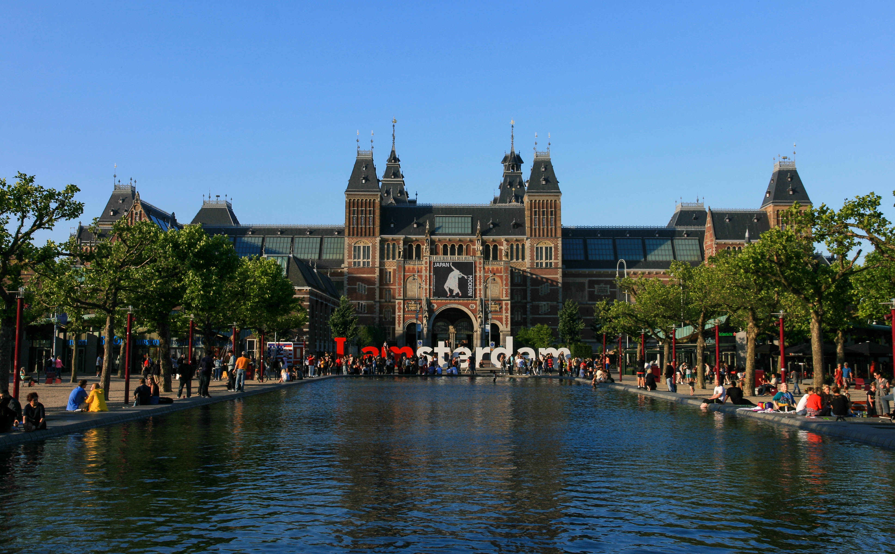
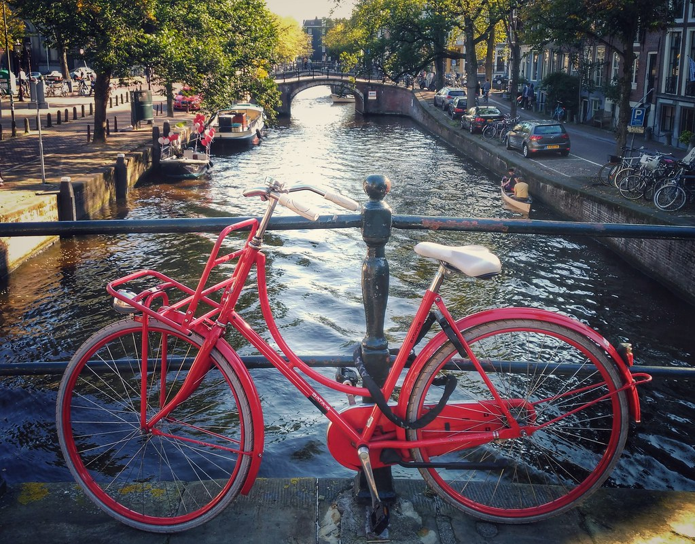

Hotel NH Collection Amsterdam Barbizon Palace
Prins Hendrikkade 59-72
Ámsterdam
Fechas disponibles: 20 al 24 de Abril
Alojamientos
Ibis Amsterdam Centre
Stationsplein, 49Hotel Room Mate Aitana
IJDok 6Hotel Pulitzer Amsterdam
Prinsengracht 323Itinerario
Día 1 - 20 de abril
- Llegada a Ámsterdam y check-in en el hotel
- Paseo por el centro histórico
- Plaza Dam
- Cena en el barrio Jordaan
Día 2 - 21 de abril
- Visita al Rijksmuseum
- Museo Van Gogh
- Paseo por el Vondelpark
- Tarde libre
Día 3 - 22 de abril
- Casa de Ana Frank
- Recorrido por los canales en barco
- Zona de Leidseplein
- Cena de grupo
Día 4 - 23 de abril
- Excursión a Zaanse Schans
- Visita a molinos de viento
- Volendam y Marken
- Regreso a Ámsterdam
Día 5 - 24 de abril
- Mañana libre para compras
- Paseo final por los canales
- Regreso
Actividades

Culturales
- Rijksmuseum
- Museo Van Gogh
- Casa de Ana Frank

Aventuras
- Paseo en barco por canales
- Ruta en bicicleta por la ciudad

En naturaleza
- Zaanse Schans
- Molinos de viento
- Volendam
Precios: Desde 2000 € a 3100 €